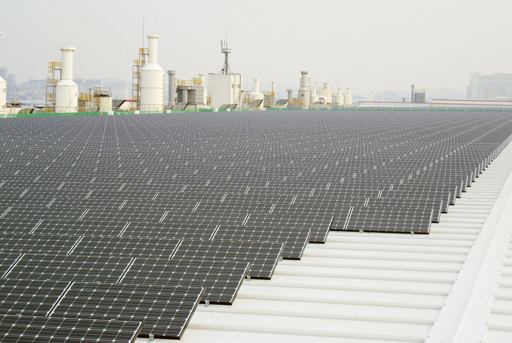
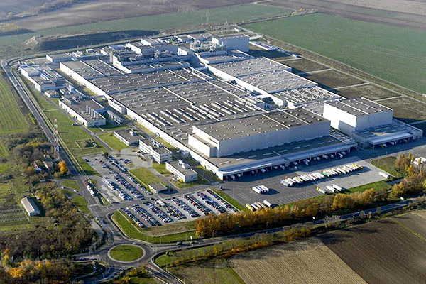

▲ 공장 지붕형 태양광 발전설비의 모습(사진은 LG전자 국내 공장 사례이며 한국타이어 금산공장 실제 현장 사진은 아니다) ⓒ LG전자, Wikimedia Commons (CC BY 2.0)
타이어 공장 지붕이 조용히 발전소로 바뀌고 있습니다. 한국타이어가 국내 최대 생산기지인 충남 금산공장의 창고 두 곳 지붕에 태양광 패널을 깔았습니다. 규모는 5,069kW, 웬만한 중소형 태양광 발전소와 맞먹는 용량입니다. 이 전기는 그대로 공장 안에서 소비됩니다.
왜 하필 지금, 왜 하필 금산인가. 답은 두 갈래입니다. 하나는 2025년 새로 지어진 창고 지붕이라는 '마침 비어 있던 자리'이고, 다른 하나는 2050년 넷제로를 선언한 한국타이어의 전사적 로드맵입니다. 그 사이에서 경쟁사인 넥센타이어와 금호타이어는 각자 다른 속도로 같은 숙제를 풀고 있습니다.
1. 금산공장에 들어선 5,069kW, 숫자로 뜯어보면
이번에 구축된 설비는 두 개 건물로 나뉩니다. 원자재를 보관하는 창고동 지붕에 2,692kW, 완성된 타이어를 쌓아두는 완제품동 지붕에 2,377kW 규모의 패널이 각각 올라갔습니다. 둘을 합치면 5,069kW, 통상 '5MW급'으로 불리는 규모입니다. 두 창고 모두 2025년에 새로 지어진 건물로, 설계 단계부터 지붕 하중과 배선을 태양광 설비에 맞춰 준비했을 가능성이 큽니다.
| 구분 | 설치 위치 | 발전 용량 |
|---|---|---|
| 1 | 원자재동 지붕 | 2,692kW |
| 2 | 완제품동 지붕 | 2,377kW |
| 합계 | 5,069kW | |
| 연간 발전량 약 6.66GWh · 연간 온실가스 감축 약 3,061톤CO₂ 추정 | ||
핵심은 '자가소비형'이라는 방식입니다. 생산한 전력을 한국전력에 되팔아 수익을 내는 발전사업이 아니라, 공장이 쓰는 전력의 일부를 태양광으로 대체하는 구조입니다. 즉 이 설비의 존재 목적은 매출이 아니라 금산공장 자체의 재생에너지 사용 비율을 끌어올리는 것입니다.

▲ 타이어 한 본을 뽑아내기까지는 배합·압출·성형·가류 등 여러 공정에서 지속적으로 전력이 들어간다 ⓒ Wikimedia Commons
2. 왜 하필 지금, 왜 하필 금산공장인가
금산공장은 한국타이어의 국내 두 생산기지(대전·금산) 중에서도 최대 규모를 자랑합니다. 승용차용부터 초고성능 타이어까지 폭넓은 라인업을 소화하는 만큼 전력 사용량도 그만큼 많습니다. 대규모 공장일수록 지붕 면적이 넓어 태양광 패널을 설치할 물리적 여유가 크다는 점도 실질적인 이유 중 하나입니다.
게다가 이번 설비가 올라간 두 창고는 2025년에 새로 지어진 건물입니다. 오래된 지붕을 보강 공사해서 태양광을 얹는 것보다, 신축 단계에서 애초에 하중과 배선을 고려해 짓는 편이 비용과 공정 양면에서 유리합니다. 한국타이어가 신축 물류창고를 태양광 설비의 첫 적용 대상으로 택한 배경도 여기에 있을 것으로 보입니다.
이번 사업은 한국환경공단의 탄소중립설비 지원사업에 선정돼 추진된 것으로 전해진다. 정부 지원사업에 선정됐다는 것은 유휴 지붕 공간 활용성과 온실가스 감축 효과 등에서 일정 기준을 충족했다는 의미로, 순수하게 기업 자체 예산만으로 추진한 설비가 아니라는 점도 눈여겨볼 대목이다.
📍 RE100과 SBTi, 헷갈리기 쉬운 두 용어
RE100은 기업이 사용하는 전력 100%를 재생에너지로 조달하겠다는 국제 캠페인이고, SBTi(과학 기반 감축목표 이니셔티브)는 기업의 온실가스 감축 목표치가 파리협정이 요구하는 과학적 기준에 부합하는지 제3자가 검증하는 절차입니다. 한국타이어는 2023년 국내 타이어업계 최초로 SBTi 승인을 받았다고 밝히고 있습니다.
3. 2030년 46.2%, 2050년 넷제로 — 한국타이어의 로드맵
한국타이어는 2030년까지 직접·간접 온실가스 배출량(Scope 1·2)을 2019년 대비 46.2% 줄이겠다는 중간 목표를 두고 있습니다. 최종 목적지는 2050년 완전한 넷제로입니다. 금산공장 태양광 설비는 이 로드맵의 국내 축을 담당하는 조각 중 하나입니다.
해외 생산기지에서는 각 지역 사정에 맞춘 방식이 동원됩니다. 중국 충칭(중경)공장에는 약 1MW급, 자싱(가흥)공장 주차장에는 약 0.66MW급 태양광 설비가 이미 운영되고 있습니다. 유럽에서는 헝가리 러컬머시(Rácalmás) 공장이 장기 전력구매계약(PPA)과 재생에너지 공급인증서(REC) 구매를 병행하는 방식을 택했습니다. 국가별 전력시장 구조와 부지 여건이 다른 만큼, 자가발전형 태양광과 PPA·REC를 섞어 쓰는 '맞춤형' 전략인 셈입니다.

▲ 한국타이어 헝가리 러컬머시 공장. 이곳은 태양광 자가발전 대신 장기 전력구매계약(PPA)과 재생에너지 인증서(REC) 구매로 재생에너지 비율을 높이고 있다 ⓒ CivertanS, Wikimedia Commons (CC BY-SA 4.0)
4. 타이어 한 본에 얼마나 많은 전기가 들어가나
타이어 제조는 단순히 고무를 굳히는 작업이 아닙니다. 원료 고무와 각종 첨가제를 섞는 배합(믹싱), 이를 얇게 펴는 압출·캘린더링, 형태를 잡는 성형, 마지막으로 고온·고압으로 굳히는 가류(vulcanization)까지 여러 단계를 거칩니다. 특히 믹서는 전력 소모량 자체를 공정 관리 지표로 쓸 만큼 에너지 의존도가 높은 설비입니다.
한국타이어는 대전·금산 두 공장에 에너지관리시스템 'e-Saver'를 도입해 실시간으로 사용량을 모니터링하고 있다고 밝히고 있습니다. 태양광 같은 재생에너지 설비가 '얼마나 깨끗한 전기를 쓰느냐'의 문제라면, e-Saver 같은 시스템은 '애초에 전기를 얼마나 덜 쓰느냐'를 관리하는 도구입니다. 두 접근이 맞물려야 실질적인 감축 효과가 난다는 게 업계의 공통된 설명입니다.
5. 넥센타이어·금호타이어는 지금 어디까지 왔나
재생에너지 전환에서 가장 적극적으로 움직이는 국내 경쟁사는 넥센타이어입니다. 넥센타이어는 경남 창녕공장에 2028년까지 10MW 이상의 태양광 자가발전 설비를 갖춘다는 계획을 세웠습니다. 기존에는 지붕을 임대해주고 제3자가 운영하는 태양광 설비를 활용했지만, 계약 종료 시점에 맞춰 자가발전 체제로 전환한다는 구상입니다. 이 규모는 창녕공장 전체 전력 사용량의 약 9%에 해당하는 것으로 알려졌습니다.
경남 양산공장은 다른 방식을 택했습니다. 넥센타이어는 SK이노베이션 E&S와 재생에너지 직접전력구매계약(PPA)을 체결했고, 이르면 11월부터 육상풍력과 태양광으로 생산한 전력 약 4MW, 연간 약 6GWh를 공급받을 예정입니다. 이를 통해 연간 약 2,700톤의 온실가스를 줄일 수 있을 것으로 추산됩니다.
반면 금호타이어는 지속가능경영보고서를 통해 탄소중립 원칙과 방향성을 밝히고 있지만, 이번 한국타이어·넥센타이어 사례처럼 구체적인 발전 용량이 명시된 자가발전 설비나 PPA 체결 소식은 이 글을 쓰는 현재까지 별도로 공개되지 않았습니다.
| 기업 | 방식 | 규모 | 비고 |
|---|---|---|---|
| 한국타이어 | 자가소비형 태양광 | 5,069kW (금산공장) | 연간 6.66GWh, 약 3,061톤 감축 |
| 넥센타이어 | 자가발전 태양광(예정) | 10MW 이상 (창녕공장, 2028년까지) | 공장 전력 사용량의 약 9% |
| 직접 PPA(풍력+태양광) | 약 4MW (양산공장) | 연간 6GWh, 약 2,700톤 감축 | |
| 금호타이어 | 공개된 설비·PPA 없음 | - | ESG 보고서상 원칙만 공개 |

▲ 타이어는 사이드월에 새겨 넣는 레터링 방식(화이트레터링·아웃라인 표기 등)부터 브랜드마다 표준이 제각각이다. 재생에너지 전환을 향해 가는 속도와 방식 역시 마찬가지다 ⓒ Wikimedia Commons
6. 타이어 회사들이 발전 설비에 매달리는 진짜 이유
완성차업체들이 부품·소재 협력사에 재생에너지 사용 확대를 요구하는 흐름은 이미 자동차 산업 전반에서 뚜렷해지고 있습니다. 타이어는 완성차 원가에서 차지하는 비중은 작지만, 차량 한 대에 반드시 들어가는 소모품이라는 점에서 공급망 압박에서 자유롭지 않습니다. 유럽연합의 탄소국경조정제도(CBAM) 같은 무역 규제가 하나둘 현실화하는 상황도 배경으로 꼽힙니다.
결국 한국타이어의 금산공장 태양광 설비, 넥센타이어의 창녕공장 자가발전 계획과 양산공장 PPA는 방식은 다르지만 같은 방향을 가리킵니다. '전기를 얼마나 깨끗하게 쓰느냐'가 더 이상 홍보 문구가 아니라 수출 경쟁력과 직결되는 조건이 되고 있다는 뜻입니다. 이 흐름 속에서 아직 구체적인 설비 계획을 공개하지 않은 금호타이어가 다음에 어떤 카드를 꺼낼지도 지켜볼 대목입니다.
관련 소식은 지피코리아에서 확인 가능하다. 지피코리아 원문 기사 보기